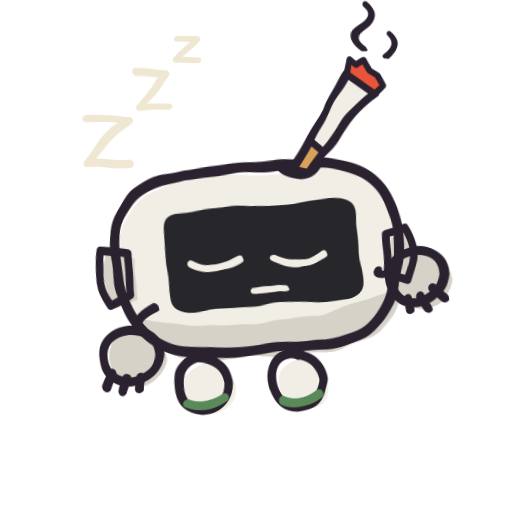

A game, update, DLC or cheat from anywhere. ThorBro finds the right folder on your Thor.
games folderThor not connected
pinned
Libraries
open one in Files
keyboard shortcuts
Add files from the PC
Ctrl + O
Open
Enter
Up one folder
Backspace
Back / forward
Alt + ←Alt + →
Refresh
F5
Select all
Ctrl + A
Copy
Ctrl + C
Cut
Ctrl + X
Paste here
Ctrl + V
Rename
F2
Delete
Delete
New folder
Ctrl + Shift + N
Pin / unpin folder
Ctrl + D
Menu for the selection
Shift + F10
No games folder found. ThorBro looks for a ROMs folder on every storage.
If your games are somewhere else (e.g. /sdcard/lisu/Roms), open or select that folder below.
Drop to add to the ThorGoes into
Saves
Move saves between PC and Thor with one click. Every copy makes a backup first.
No games yet
Add a game. I'll find the save folders on the PC and the Thor, you confirm them.
Play on Thor
Pick what the Thor should start. It opens Moonlight and connects.
Not checked yet.
Thor app
Sends this PC and your game list to ThorBro on the Thor.
Not checked yet.
Pairing is only needed once.

Nothing is streaming right now.
Mirror screens
Shows the Thor's screens on your PC over USB (scrcpy). View only, no control. Audio comes with the top screen.
Nothing running right now.
Help and details
Everything you rarely need. Open a section when something does not work.
Pair Moonlight
Open Moonlight on the Thor and tap this PC.
Moonlight shows a 4-digit PIN.
Type the PIN in ThorBro (Stream, Pair Moonlight) and press Pair. ThorBro hands it to Sunshine.
PC not listed? Tap + in Moonlight and type the PC's address (see Addresses below).
Addresses of this PC
Not checked yet.
Sunshine on this PC
Not checked yet.
Sunshine login
Not checked yet.
Apps on the Thor
Not checked yet.
Starting games
Shown once a Sunshine login is saved.
Low-latency checklist
PC on a cable. Connect it to the router by Ethernet.
Thor on 5 GHz Wi-Fi, close to the router.
GPU sync: NVIDIA Fast Sync, AMD Enhanced Sync (Windows).
Measure it: Moonlight on the Thor, Settings, "Show performance stats while streaming".
Try 120 FPS in Moonlight: the Thor's top screen supports 120 Hz at 1920×1080.
Stream profile
The data the ThorBro app on the Thor needs to start PC games: PC name, host ID, addresses, port and game names. No passwords or keys. Format: docs/STREAM-PROFILE.md.